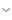

AltaCodeEditor / Компоненты
Gaps
Отступы и направляющие структуры кода.
Варианты
| Property 1 | Property 2 | Компонент |
|---|---|---|
| Gaps | Gap | |
| Gaps | Gap_stroke | |
| Gaps | Gap_stroke_Border | |
| Arrows | Down |  |
| Arrows | Right |
Отступы и направляющие структуры кода.
| Property 1 | Property 2 | Компонент |
|---|---|---|
| Gaps | Gap | |
| Gaps | Gap_stroke | |
| Gaps | Gap_stroke_Border | |
| Arrows | Down |  |
| Arrows | Right |